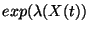

Pour modéliser le bruit "intrinsèque" on peut utiliser les processus de Markov.
Processus de Markov : évolution temporelle stochastique sans mémoire.
L'état du système à l'instant
 est decrite par
: vecteur
contenant les nombre de molécules de chaque constituant.
est decrite par
: vecteur
contenant les nombre de molécules de chaque constituant.
Le système reste dans cette état une durée
aléatoire (variable
exponentielle
), ensuite à
saute dans un état
 .
La durée moyenne d'attente
et les probabilités de transition
sont des fonctions de la dernière état
.
.
La durée moyenne d'attente
et les probabilités de transition
sont des fonctions de la dernière état
.
Algorithmes de simulation numérique (Gillespie):
Méthode directe : simuler une variable exponentielle, ensuite choisir le saut à l'aide d'une variable discrète. Défaut : on doit effectuer un grand nombre de sauts, temps de calcul enorme.
Méthode ``tau-leap'' : au lieu de générer le moment du prochain saut, on choisit un intervalle et on génère le nombre de sauts de différents types (un nombre fini) dans l'intervalle. Ces nombres sont des variables de Poisson si les probabilités de sauts ne varient pas beaucoup sur l'intervalle choisi. Défaut : méthode approchée.